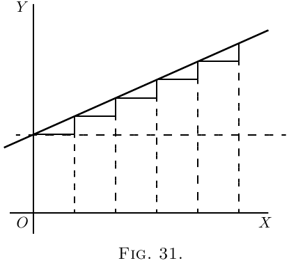
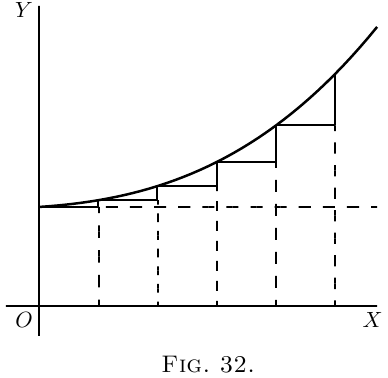
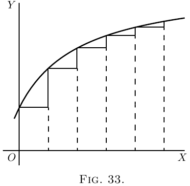
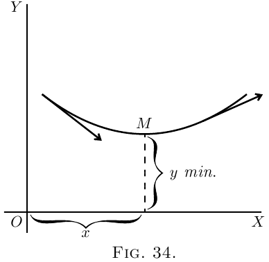
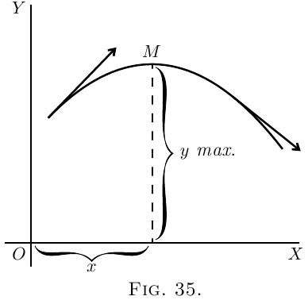

Returning to the process of successive differentiation,
it may be asked: Why does anybody want to
differentiate twice over? We know that when the
variable quantities are space and time, by differentiating
twice over we get the acceleration of a
moving body, and that in the geometrical interpretation,
as applied to curves, $\dfrac{dy}{dx}$ means the slope of the
curve. But what can $\dfrac{d^2 y}{dx^2}$ mean in this case? Clearly
it means the rate (per unit of length $x$) at which the
slope is changing–in brief, it is a measure of the
curvature of the slope.


Suppose a slope constant, as in Figure 31.
Here, $\dfrac{dy}{dx}$ is of constant value.
Suppose, however, a case in which, like Figure 32,
the slope itself is getting greater upwards, then
$\dfrac{d\left(\dfrac{dy}{dx}\right)}{dx}$, that is, $\dfrac{d^2y}{dx^2}$, will be positive.
If the slope is becoming less as you go to the right
(as in Figure 14), or as in Figure 33, then, even
though the curve may be going upward, since the
change is such as to diminish its slope, its $\dfrac{d^2y}{dx^2}$ will
be negative.

It is now time to initiate you into another secret–how
to tell whether the result that you get by
“equating to zero” is a maximum or a minimum.
The trick is this: After you have differentiated
(so as to get the expression which you equate to
zero), you then differentiate a second time, and look
whether the result of the second differentiation is
positive or negative. If $\dfrac{d^2y}{dx^2}$ comes out positive, then
you know that the value of $y$ which you got was
a minimum; but if $\dfrac{d^2y}{dx^2}$ comes out negative, then
the value of $y$ which you got must be a maximum.
That's the rule.


The reason of it ought to be quite evident. Think
of any curve that has a minimum point in it (like
Figure 15), or like Figure 34, where the point of
minimum $y$ is marked $M$, and the curve is concave
upwards. To the left of $M$ the slope is downward,
that is, negative, and is getting less negative. To the
right of $M$ the slope has become upward, and is
getting more and more upward. Clearly the change
of slope as the curve passes through $M$ is such that
$\dfrac{d^2y}{dx^2}$ is positive, for its operation, as $x$ increases toward
the right, is to convert a downward slope into an
upward one.
Similarly, consider any curve that has a maximum
point in it (like Figure 16), or like Figure 35, where
the curve is convex, and the maximum point is
marked $M$. In this case, as the curve passes through $M$
from left to right, its upward slope is converted
into a downward or negative slope, so that in this
case the “slope of the slope” $\dfrac{d^2y}{dx^2}$ is negative.
Go back now to the examples of the last chapter
and verify in this way the conclusions arrived at as to
whether in any particular case there is a maximum
or a minimum. You will find below a few worked
out examples.
(1) Find the maximum or minimum of
\begin{align*}
\text{(a)}\quad y &= 4x^2-9x-6; \qquad \text{(b)}\quad y = 6 + 9x-4x^2; \\
\end{align*}
and ascertain if it be a maximum or a minimum in each case.
\begin{align*}
\text{(a)}\quad \dfrac{dy}{dx}
&= 8x-9=0;\quad x=1\tfrac{1}{8},\quad \text{and } y = -11.065.\\
\dfrac{d^2y}{dx^2}
&= 8;\quad \text{it is $+$; hence it is a minimum.} \\
\text{(b)}\quad {\dfrac{dy}{dx}}
&= 9-8x=0;\quad x = 1\tfrac{1}{8};\quad \text{and } y = +11.065.\\
\dfrac{d^2y}{dx^2}
&= -8;\quad \text{it is $-$; hence it is a maximum.}
\end{align*}
(2) Find the maxima and minima of the function
$y = x^3-3x+16$.
\begin{align*}
\dfrac{dy}{dx}
&= 3x^2 - 3 = 0;\quad x^2 = 1;\quad \text{and } x = ±1.\\
\dfrac{d^2y}{dx^2}
&= 6x;\quad \text{for $x = 1$; it is $+$};
\end{align*}
hence $x=1$ corresponds to a minimum $y=14$. For
$x=-1$ it is $-$; hence $x=-1$ corresponds to a maximum
$y=+18$.
(3) Find the maxima and minima of $y=\dfrac{x-1}{x^2+2}$.
\[
\frac{dy}{dx} = \frac{(x^2+2) × 1 - (x-1) × 2x}{(x^2+2)^2}
= \frac{2x - x^2 + 2}{(x^2 + 2)^2} = 0;
\]
or $x^2 - 2x - 2 = 0$, whose solutions are $x =+2.73$ and
$x=-0.73$.
\begin{align*}
\dfrac{d^2y}{dx^2}
&= - \frac{(x^2 + 2)^2 × (2x-2) - (x^2 - 2x - 2)(4x^3 + 8x)}{(x^2 + 2)^4} \\
&= - \frac{2x^5 - 6x^4 - 8x^3 - 8x^2 - 24x + 8}{(x^2 + 2)^4}.
\end{align*}
The denominator is always positive, so it is sufficient
to ascertain the sign of the numerator.
If we put $x = 2.73$, the numerator is negative; the
maximum, $y = 0.183$.
If we put $x=-0.73$, the numerator is positive; the
minimum, $y=-0.683$.
(4) The expense $C$ of handling the products of a
certain factory varies with the weekly output $P$
according to the relation $C = aP + \dfrac{b}{c+P} + d$, where
$a$, $b$, $c$, $d$ are positive constants. For what output
will the expense be least?
\[
\dfrac{dC}{dP} = a - \frac{b}{(c+P)^2} = 0\quad \text{for maximum or minimum;}
\]
hence $a = \dfrac{b}{(c+P)^2}$ and $P = ±\sqrt{\dfrac{b}{a}} - c$.
As the output cannot be negative, $P=+\sqrt{\dfrac{b}{a}} - c$.
\begin{align*}
Now
\frac{d^2C}{dP^2} &= + \frac{b(2c + 2P)}{(c + P)^4},
\end{align*}
which is positive for all the values of $P$; hence
$P = +\sqrt{\dfrac{b}{a}} - c$ corresponds to a minimum.
(5) The total cost per hour $C$ of lighting a building
with $N$ lamps of a certain kind is
\[
C = N\left(\frac{C_l}{t} + \frac{EPC_e}{1000}\right),
\]
where $E$ is the commercial efficiency (watts per candle),
$P$ is the candle power of each lamp, Moreover, the relation connecting the average life
of a lamp with the commercial efficiency at which it
is run is approximately $t = mE^n$, where $m$ and $n$ are
constants depending on the kind of lamp.
Find the commercial efficiency for which the total
cost of lighting will be least.
\begin{align*}
\text{ We have}\;
C &= N\left(\frac{C_l}{m} E^{-n} + \frac{PC_e}{1000} E\right), \\
\dfrac{dC}{dE}
&= \frac{PC_e}{1000} - \frac{nC_l}{m} E^{-(n+1)} = 0
\end{align*}
for maximum or minimum.
\[
E^{n+1} = \frac{1000 × nC_l}{mPC_e}\quad \text{and}\quad
E = \sqrt[n+1]{\frac{1000 × nC_l}{mPC_e}}.
\]
This is clearly for minimum, since
\[
\frac{d^2C}{dE^2} = (n + 1) \frac{nC_l}{m} E^{-(n+2)},
\]
which is positive for a positive value of $E$.
For a particular type of $16$ candle-power lamps,
$C_l= 17$ pence, $C_e=5$ pence; and it was found that
$m=10$ and $n=3.6$.
\[
E = \sqrt[4.6]{\frac{1000 × 3.6 × 17}{10 × 16 × 5}}
= 2.6\text{ watts per candle-power}.
\]
(2) Given $y = \dfrac{b}{a}x - cx^2$, find expressions for $\dfrac{dy}{dx}$, and
for $\dfrac{d^2y}{dx^2}$, also find the value of $x$ which makes $y$ a
maximum or a minimum, and show whether it is
maximum or minimum.
(3) Find how many maxima and how many minima
there are in the curve, the equation to which is
\[
y = 1 - \frac{x^2}{2} + \frac{x^4}{24};
\]
and how many in that of which the equation is
\[
y = 1 - \frac{x^2}{2} + \frac{x^4}{24} - \frac{x^6}{720}.
\]
(4) Find the maxima and minima of
\[
y=2x+1+\frac{5}{x^2}.
\]
(5) Find the maxima and minima of
\[
y=\frac{3}{x^2+x+1}.
\]
(6) Find the maxima and minima of
\[
y=\frac{5x}{2+x^2}.
\]
(7) Find the maxima and minima of
\[
y=\frac{3x}{x^2-3} + \frac{x}{2} + 5.
\]
(8) Divide a number $N$ into two parts in such a
way that three times the square of one part plus
twice the square of the other part shall be a
minimum.
(9) The efficiency $u$ of an electric generator at
different values of output $x$ is expressed by the
general equation:
\[
u=\frac{x}{a+bx+cx^2};
\]
where $a$ is a constant depending chiefly on the energy
losses in the iron and $c$ a constant depending chiefly
on the resistance of the copper parts. Find an expression
for that value of the output at which the
efficiency will be a maximum.
(10) Suppose it to be known that consumption of
coal by a certain steamer may be represented by the
formula $y = 0.3 + 0.001v^3$; where $y$ is the number of
tons of coal burned per hour and $v$ is the speed
expressed in nautical miles per hour. The cost of
wages, interest on capital, and depreciation of that
ship are together equal, per hour, to the cost of
$1$ ton of coal. What speed will make the total cost
of a voyage of $1000$ nautical miles a minimum?
And, if coal costs $10$ shillings per ton, what will that
minimum cost of the voyage amount to?
(11) Find the maxima and minima of
\[
y = ±\frac{x}{6}\sqrt{x(10-x)}.
\]
(12) Find the maxima and minima of
\[
y= 4x^3 - x^2 - 2x + 1.
\]
(1) Max.: $x = -2.19$, $y = 24.19$; min.:, $x = 1.52$, $y = -1.38$.
(2) $\dfrac{dy}{dx} = \dfrac{b}{a} - 2cx$; $\dfrac{d^2 y}{dx^2} = -2c$; $x = \dfrac{b}{2ac}$ (a maximum).
(3) (a ) One maximum and two minima.
(b ) One maximum. ($x = 0$; other points unreal.)
(4) Min.: $x = 1.71$, $y = 6.14$.
(5) Max: $x = -.5$, $y = 4$.
(6) Max.: $x = 1.414$, $y = 1.7675$.
Min.: $x = -1.414$, $y = 1.7675$.
(7) Max.: $x = -3.565$, $y = 2.12$.
Min.: $x = +3.565$, $y = 7.88$.
(8) $0.4N$, $0.6N$.
(9) $x = \sqrt{\dfrac{a}{c}}$.
(10) Speed $8.66$ nautical miles per hour. Time taken $115.47$ hours.
Minimum cost £$112$. $12$s .
(11) Max. and min. for $x = 7.5$, $y = ±5.414$. (See example
no. 10, here.)
(12) Min.: $x = \frac{1}{2}$, $y= 0.25$; max.: $x = - \frac{1}{3}$, $y= 1.408$.
$t$ is the average life of each lamp in hours,
$C_l =$ cost of renewal in pence per hour of use,
$C_e =$ cost of energy per $1000$ watts per hour.
Exercises X
(You are advised to plot the graph
of any numerical example.)
(1) Find the maxima and minima of
\[
y = x^3 + x^2 - 10x + 8.
\]
Answers
Next →
Main Page ↑